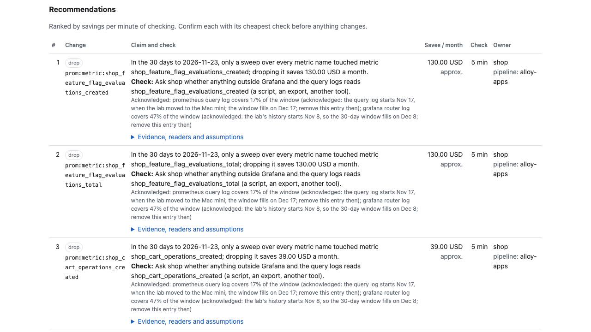
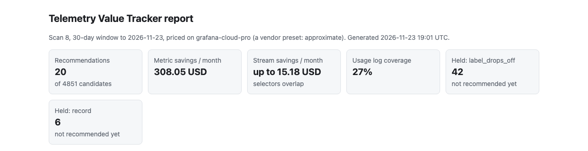

Find the telemetry nobody reads. Cut it safely.
tvt reads your dashboards, alerts and query logs to learn which metrics, labels and log streams anyone actually uses. It prices the rest, then opens a pull request to drop, aggregate or reroute them. A person reviews every change, and a pre-merge check refuses anything that would break an alert, an SLO or a viewed dashboard.

How it works
One binary, four commands. Run it from a laptop or a CI job. Nothing to host.
- Scan.
tvt scanreads Grafana dashboards and view logs, alert and recording rules, and the query logs of Prometheus, Mimir and Loki. It builds a usage graph: which signal feeds which panel, alert or query, and what each one costs. - Report.
tvt reportranks what nobody reads by monthly savings and writes an HTML and JSON report.tvt whyshows every reader of a signal, so you can check any recommendation yourself. - Propose.
tvt proposewrites the change in the format of the pipeline that ingests the signal: Prometheus relabel rules, Grafana Alloy, the OpenTelemetry Collector or Fluent Bit. Each change opens as a draft pull request, with its revert ready. - Check.
tvt checkruns in your CI, offline. It judges the change against the protection manifest and fails it if anything an alert, SLO, viewed dashboard or record needs would be dropped.
After a change merges, the next scans measure what it actually saved, so the report shows measured savings, not estimates.
See it work
From the tvt test lab, a small Grafana stack seeded with known waste and known readers.
The report

Why is this kept?
$ tvt why shop_cart_operations_total
class keep_high; owner shop
costs 39.00 USD/month
last read 2026-11-23
readers (5)
observed exact, dashboard JSON
Shop Overview / Cart operations
observed exact, query log
the same panel, as Prometheus ran it
observed inferred, assumed
Shop Overview / Counter rate
observed inferred, query log
a sweep over every metric name:
never keeps a signal on its ownThe gate in CI
$ tvt check --base origin/main
manifest scan 8: 1774 protected
changed: alloy/config.alloy
changed: otelcol/config.yaml
changed: prometheus/scrape/lab.yml
PASS
# drop a protected metric instead:
REFUSED: 1 findings
protected_signal: drops
shop_checkout_attempts_total,
hard_keep (protected in the
manifest before this change)What it proposes
The least lossy change that keeps every reader working wins. Dropping is the last resort, not the first.
- Remove a label nobody groups or filters by, or aggregate it away and keep the totals (behind
--label-dropsuntil a precision review on real data passes) - Scrape less often where dashboards use coarse steps
- Send log lines below warn to a cheaper tier
- Route an unread log stream to cold storage
- Sample an unread stream that can't be rerouted
- Collapse repeated log lines into one line with a count
- Measure large keys in log lines and what capping them would save
- Move dormant metrics to a cheaper tenant tier in Alloy
- Drop a metric nothing reads
- Hand line-level cuts to zeroreads, with the pattern and its cost
- Flag costly rules: duplicates, unread recording rules, LogQL that parses raw logs
Records are never sampled, collapsed or dropped: audit logs, deploy and change events, and agent tool-call spans keep their outcome.
Built so it can't hurt the stack it reads
Cutting the wrong signal during an incident costs more than the bill. tvt is designed around that.
Read-only
tvt reads through backend read APIs only, and tags every request so your own logs show exactly what it read. The only writes are Git pull requests.
Fails closed
A query it can't parse, a data source it doesn't read, or a backend that stops answering counts as a reader, never as "unused". A scan that loses a backend writes nothing.
Hard keeps
Alerts, recording rules, SLOs and viewed dashboards are never candidates. Warn-level and higher log lines are never dropped.
Least lossy first
tvt prefers aggregating, downsampling or routing to cold storage over deleting, and every change ships with its revert.
Signed releases
Release checksums are signed with cosign and builds are reproducible, so you can verify the binary you run.
Works with your stack
Self-hosted Grafana or Grafana Cloud. More backends are on the roadmap.
Reads
- Grafana (OSS and Cloud)
- Prometheus
- Mimir
- Loki
- OpenTelemetry Collector
Writes changes for
- Prometheus
- Grafana Alloy
- OpenTelemetry Collector
- Fluent Bit
Running something else? Tell us what you use.
Observability of its own
tvt emits its own traces and metrics over OTLP, with bounded labels and no tokens, names or queries at the default level. Point it at your collector and watch it work.
Install
Download a release for Linux, macOS or Windows, verify it, and run it. The full guide is in docs/install.md.
VERSION=0.1.0-rc2 OS=darwin ARCH=arm64 # or linux, amd64
gh release download "v$VERSION" --repo Opsmastery-Summit/tvt \
--pattern "tvt_${VERSION}_${OS}_${ARCH}.tar.gz" --pattern 'checksums.txt*'
cosign verify-blob --bundle checksums.txt.sigstore.json \
--certificate-identity-regexp 'https://github.com/Opsmastery-Summit/tvt/' \
--certificate-oidc-issuer https://token.actions.githubusercontent.com \
checksums.txt
shasum -a 256 --ignore-missing -c checksums.txt
tar -xzf "tvt_${VERSION}_${OS}_${ARCH}.tar.gz" tvt && sudo install -m 0755 tvt /usr/local/bin/tvt
tvt init --grafana https://grafana.example.com --prom https://prometheus.example.comFrom source with Go 1.27 or later: go install github.com/Opsmastery-Summit/tvt/cmd/tvt@latest. Want to try it without your own stack? tvt-lab runs a local Grafana stack seeded with known waste.
Project status
v0.1.0 is in release candidates, tested end to end on a local lab and on a Grafana Cloud stack. The core workflow is usable today.
init,scan,report,whyproposefor four pipeline formatscheckand owner confirmations- The savings ledger: measured, not estimated
- Grafana OSS and Grafana Cloud
- Signed, reproducible releases
Coming next
Planned after v0.1.0, in roughly this order. The roadmap has the detail.
tvt serve: scheduled scans and trend history- Cost by team or service
- New waste flagged within a day of a release
- Traces, and more log and metric backends
Release channels: tags ending in -rc are pre-releases for testing; plain version tags are stable.
Find out what your telemetry is worth
Point tvt at a Grafana stack, read the report, and decide for yourself. Nothing changes until you merge a pull request.
Contact
Questions, bugs and ideas belong in the open, where others can find the answer too.
Questions and ideas
GitHub Discussions: ask how to fit tvt to your stack, or suggest what it should read next.
Bugs
Open an issue with your tvt version, the command you ran and what you saw.
Security
Please don't open a public issue. Report vulnerabilities privately as described in the security policy.
Work with the maintainer
Want help applying tvt to your observability stack? Reach out to Jason Vance on LinkedIn.